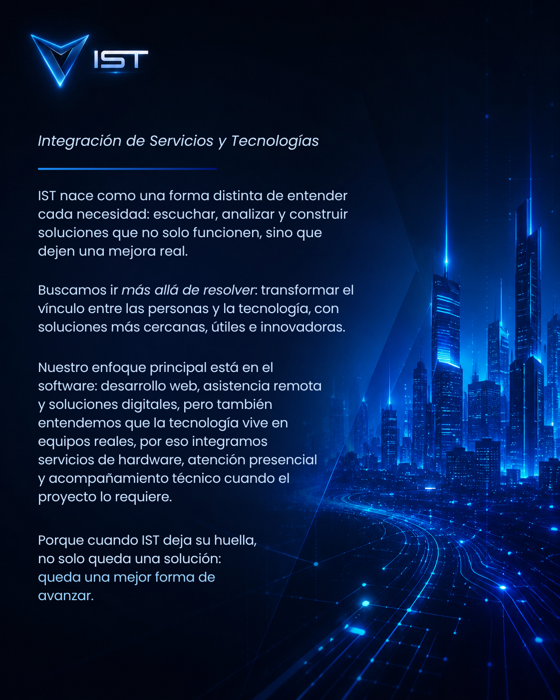
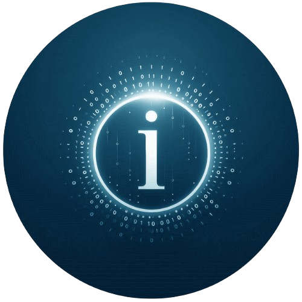
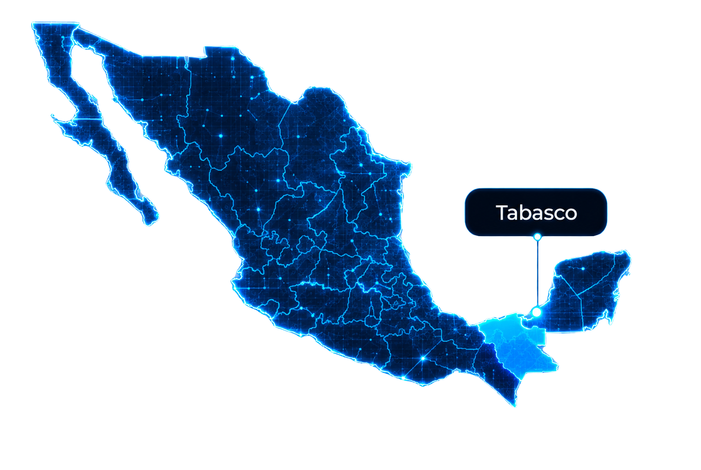

Software como enfoque
Desarrollo web, asistencia remota, soluciones digitales y procesos que pueden resolverse con precisión.
IST crea soluciones que no solo resuelven, sino que mejoran la experiencia, la presencia y la confianza de cada proyecto.
Mira cómo nació la visión de IST, cómo evolucionó su forma de innovar y cómo inicia una nueva etapa enfocada en ir más allá de resolver
Una visión creada para ir más allá de resolver: transformar la experiencia, fortalecer la confianza y dejar una mejora real en cada proyecto.

Desarrollo web, asistencia remota, soluciones digitales y procesos que pueden resolverse con precisión.
IST puede operar por medio de distintos softwares para atender, guiar y resolver sin barreras físicas.
Cuando el proyecto lo requiere, integramos diagnóstico, mantenimiento y acompañamiento técnico presencial.
Dos ideas que guían cada asistencia, cada proyecto y cada solución: resolver con propósito y avanzar con visión.
Resolver los retos tecnológicos de personas, negocios y proyectos con soluciones claras, útiles y humanas. En IST vamos más allá de reparar, desarrollar o asistir: escuchamos, analizamos, explicamos la causa y construimos respuestas que dejan una mejora real en cada asistencia, problema y proyecto finalizado.
Convertirnos en un referente regional de innovación, confianza y soluciones tecnológicas, llevando el alcance de IST a personas y proyectos cada vez más lejos. Buscamos integrar nuevas tecnologías, perfeccionar nuestros procesos y crear experiencias que transformen la manera en que las personas resuelven, avanzan y confían en la tecnología.
Para IST, resolver no significa solamente terminar una tarea. Significa dejar una mejora real, una experiencia más clara y una mejor forma de avanzar.
Más allá de resolver es la forma en que IST entiende cada proyecto, cada asistencia y cada problema tecnológico. No se trata únicamente de entregar una solución funcional, sino de aportar claridad, evolución y valor real después de cada intervención.
IST busca transformar la marca: mejorar su imagen, su experiencia de usuario y la forma en que comunica su esencia. Desde un logo con más alma hasta un sitio web que exprese mejor cada detalle, el objetivo es que exista un antes y un después.
El cliente no solo recibe el trabajo hecho. También comprende la causa del problema, la solución aplicada y las recomendaciones para prevenir, mejorar y tomar mejores decisiones en el futuro.
IST ha evolucionado no solo en imagen, sino en visión. Lo que comenzó como una propuesta enfocada en innovar, solucionar y triunfar, hoy se convierte en una filosofía más profunda: ir más allá de resolver.

La primera versión de IST representó el impulso inicial: una marca orientada a innovar, solucionar y triunfar. Fue el punto de partida de una propuesta que ya buscaba diferenciarse dentro del entorno tecnológico, y traer un cambio en la sociedad.

IST V2 da un paso más allá: no solo busca resolver necesidades, sino dejar una mejora real en cada proyecto, asistencia y solución tecnológica. La evolución ya no es solo visual, sino también conceptual: una marca que transforma, explica, mejora y deja huella.
IST V1 fue el impulso inicial. IST V2 es la consolidación de una filosofía: construir soluciones que no solo funcionen, sino que dejen una mejor forma de avanzar.
IST combina atención presencial estratégica con capacidad operativa a distancia, permitiendo llevar soluciones tecnológicas a cualquier lugar.
Nuestra base de atención presencial se encuentra en Cárdenas, Tabasco, con alcance a todo el estado, desde donde atendemos servicios, diagnósticos, visitas y acompañamiento técnico directo.

Gracias a nuestro enfoque remoto, IST puede operar a distancia con clientes, equipos y proyectos en todo México y el mundo, eliminando barreras físicas y ampliando el alcance de nuestras soluciones.
Hablemos de tu proyecto, problema tecnológico o solución digital. IST puede ayudarte a dar el siguiente paso.